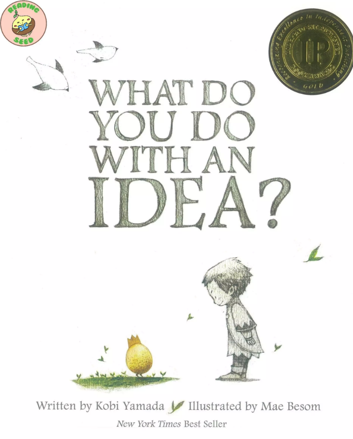
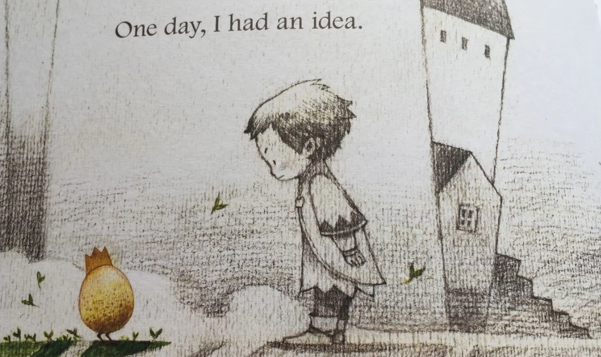

Once Upon a Page
Once Upon a Page

What Do You Do with an Idea?
A child learns to care for a small idea until it grows.
A Strange Little Idea

The story begins with the introduction of the main character, a young child, who encounters the sudden and unexpected appearance of a new idea.
The idea is depicted as a small,golden egg-like creature with a crown, symbolizing its potential and uniqueness. Initially, the child feels a sense of confusion and discomfort with this unfamiliar concept.
The child does not understand what the idea is or what to do with it.
This uncertainty leads to a series of mixed emotions, ranging from curiosity to apprehension.
In the beginning, the child’s reaction to the idea is one of hesitance and doubt.
The child is unsure if the idea is good or not, and the unfamiliarity of this new occurrence makes the child feel uneasy.
There is an instinctive reaction to try to ignore or push away the idea, hoping it might disappear or go away if not given attention.
Despite this, the idea continues to linger, and its presence is persistent, subtly indicating that it cannot be easily dismissed or forgotten.
This sets the stage for the journey of discovery and acceptance that follows, highlighting the initial struggle between ignoring the unfamiliar and daring to explore it.